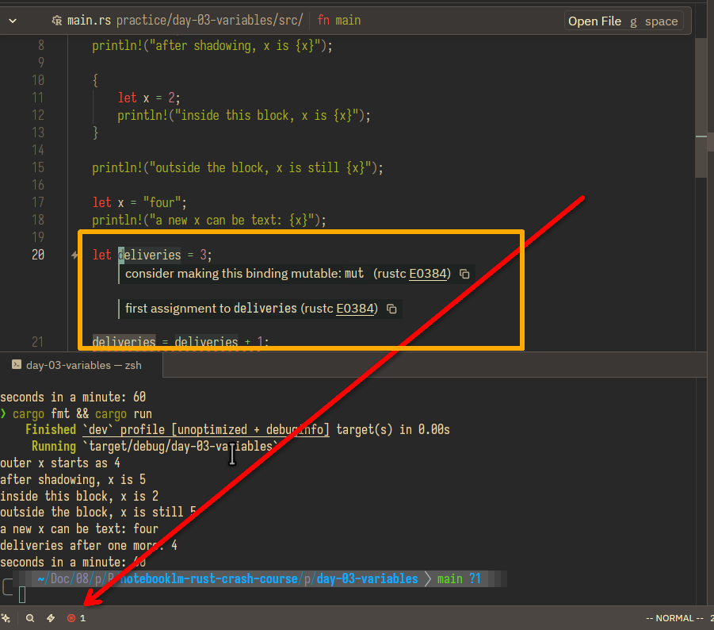
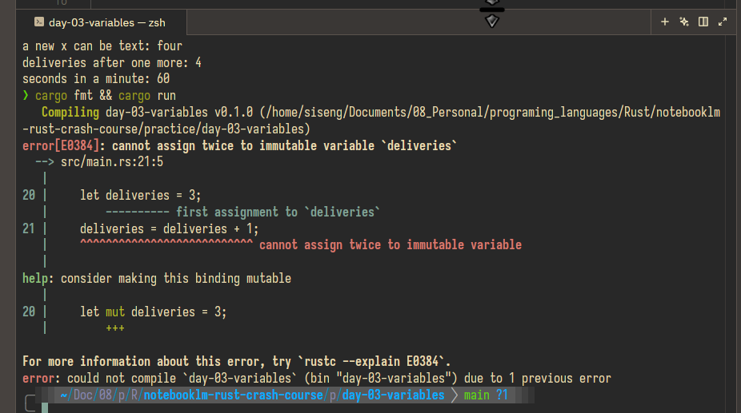

Rust Crash Course · Day 3 · Source 05
Keep a value. Change it on purpose.
Build a tiny Cargo program that shows Rust’s default immutability, deliberate mutation, shadowing, scope, and constants.
What this chapter introduces
In Rust, let x = 4; creates an immutable binding: the name x cannot later be assigned a new value. This is Rust’s default because it makes accidental changes easier to spot. Use let mut only when one value truly needs to change. Use shadowing—another let with the same name—when you mean to create a new value, possibly even with a new type.
A constant is different again: it must have an explicit type, uses const, and is conventionally written in UPPER_SNAKE_CASE. Its value cannot change anywhere in the program.
Course source: Tech With Tim’s Rust Programming Tutorial.
Four ideas, one decision
let x = 4;Keep x fixed. A later x = 5; is an error.let mut x = 4;Use this when the same value genuinely changes over time.let x = x + 1;This is shadowing: a new binding replaces the old one in this scope.const SECONDS_PER_MINUTE: u32 = 60;A constant needs a type and cannot be redefined or reassigned.let. Add mut only when you need reassignment. Choose shadowing when a later value is conceptually a new version of the earlier one.One name, two different operations
The small word let changes what Rust does. It is reasonable that these lines look similar; Rust deliberately treats them as different operations.
let x = 20;Create a new immutable binding named x. This is the first declaration of the name in this scope.x = 20;Do not create anything. Replace the value of an existing x. This works only if it began as let mut x.let x = 20; againCreate a new binding with the same name. It hides the earlier one; it does not modify it.let = 20;Rust needs a name after let, so this cannot compile.// Shadowing: two separate bindings.
let x = 10;
let x = 20;
// Mutation: one binding whose value changes.
let mut deliveries = 3;
deliveries = 4;let x = 10; let x = x + 1; behaves like x_1 = 10; x_2 = x_1 + 1;. Rust allows both bindings to use the convenient name x.Zed Lab · use this every day
Create today’s project yourself
- Open the Rust course folder in Zed.
- Press Ctrl + ` to open Zed’s integrated terminal.
- From the course root, create and enter a fresh project:
cargo new practice/day-03-variables
cd practice/day-03-variables
zed .In the Zed window for this project, open src/main.rs. You will type the program below. Save it, then return to Zed’s terminal and run cargo fmt && cargo run.
Do this now
Make the names tell the truth
Replace the generated main.rs contents with this code. Type it, rather than treating it as a file we made for you. Then change the names or numbers to fit a small task you know—orders, study minutes, or package deliveries.
const SECONDS_PER_MINUTE: u32 = 60;
fn main() {
let x = 4;
println!("outer x starts as {x}");
let x = x + 1;
println!("after shadowing, x is {x}");
{
let x = 2;
println!("inside this block, x is {x}");
}
println!("outside the block, x is still {x}");
let x = "four";
println!("a new x can be text: {x}");
let mut deliveries = 3;
deliveries = deliveries + 1;
println!("deliveries after one more: {deliveries}");
println!("seconds in a minute: {SECONDS_PER_MINUTE}");
}Success looks like: cargo fmt && cargo run finishes without warnings and prints that the inner x is 2, while the outer x remains 5.
Try one compiler-guided experiment
Change let mut deliveries = 3; to let deliveries = 3;. Save and run cargo run. Rust should say you cannot assign twice to an immutable variable. Read the error, then restore mut.

deliveries, so Zed suggests let mut deliveries = 3;.
cargo run: Rust identifies the first assignment, the later reassignment, and the exact one-word fix.Next, change let x = "four"; to x = "four";. Notice the difference: without let, this is an attempted reassignment of an existing integer binding, not shadowing. Restore the original code when you have seen the error.
Retrieval check
Which line creates a new binding instead of changing the old one?
Finish line
Before tomorrow
Reply with: your terminal output (no secrets), plus one sentence explaining why let x = x + 1; works without mut but x = x + 1; does not.